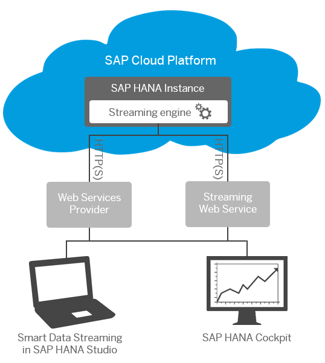

SAP Cloud Platform, streaming analytics is an SAP
HANA component that provides the ability to build applications that process streams of
incoming event data in real time, and to collect and act on incoming information.
Streaming analytics is ideally suited
for situations where data arrives as events happen, and where there is value in
collecting, understanding, and acting on this data right away. Some examples of data
sources that produce streams of events in real time include:
- Sensors
- Smart devices
- Web sites (click streams)
- IT systems (logs)
- Financial markets (prices)
- Social media
You can actively monitor data arriving from various sources, and set alerts to be
triggered when immediate attention is warranted. For example, you can alert operations
staff to imminent equipment failure, or target marketing offers to customers based on
context.

This figure shows a typical streaming analytics deployment
on the SAP Cloud Platform.
Continuous queries, which you develop and test as projects using the SAP HANA smart data
streaming plugin for SAP HANA studio, are deployed tostreaming analytics on the
SAP Cloud Platform. SAP HANA
cockpit provides an operations console for configuring streaming analytics.
Caution SAP Cloud Platform, streaming analytics is the
cloud-based version of the on-premise product, SAP HANA smart data streaming. Any
references to "smart data streaming" refer to components located outside the SAP Cloud Platform. Smart data
streaming documentation fully applies to streaming analytics, unless
otherwise stated in this section, or in a smart data streaming topic.
Restrictions
Version and feature support:
- You must have an SAP HANA instance with a minimum size of 256GB associated
with your SAP Cloud Platform
account. If you are using SP 10, it must be at least revision 102.04; if you
are using SP 11, it must be at least revision 112.05.
- For an SAP HANA SP 12 instance, SAP Cloud Platform, streaming analytics
must be at least SP 11 revision 112.08, or SP 12 revision 122.07.
- Any on-premise smart data streaming components must be the same version as the streaming
server on the SAP Cloud Platform.
- SAP Cloud Platform, streaming analytics only supports single-tenant databases. You cannot use any version of
streaming analytics
with a multi-tenant SAP HANA database on the SAP Cloud Platform.
Connections to and from
SAP Cloud Platform, streaming analytics:
- You can only connect to streaming analytics
on the SAP Cloud Platform using
one of two methods: through the Streaming Web Service, and through the Web
Services Provider (using REST connections). Each one is responsible for
different tasks. See Streaming Analytics Connectivity.
- The Streaming Web Service and the Web Services Provider are preconfigured
for you during setup. You can customize their configuration properties
through the SAP HANA cockpit. However, you cannot change the preconfigured
port numbers, as connections to the SAP Cloud Platform will
no longer work.
- The Web Services Provider uses REST connections. In this implementation, it
does not accept SOAP requests.
- Only certain adapters can connect from an on-premise environment to the
streaming analytics
component. See Adapters for
more information.
Data delivery and recovery:
- The streaming analytics
web server does not support guaranteed delivery. If a project stops or
rejects a message for any reason, the message is not delivered, and there is
no indication that the message is lost.
- Log stores are currently not backed up, and you cannot set a custom path for
a log store. In the event of a disk failure, all data in log stores is lost
and cannot be recovered.